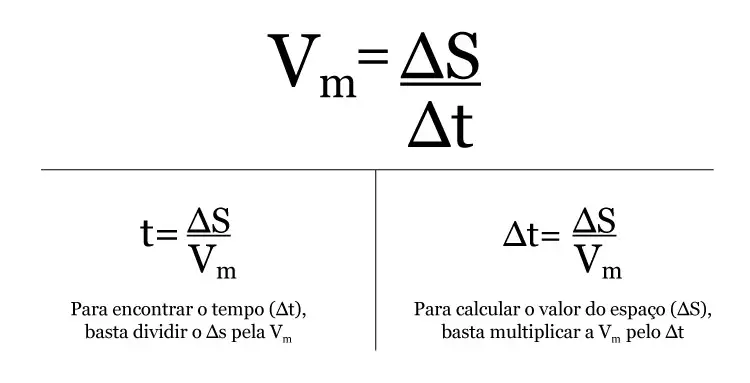

Velocidade
A velocidade média é uma grandeza que relaciona a distância total percorrida por um corpo ao tempo total gasto para percorrê-la. Na Física, a velocidade mede o quão rápido um objeto se desloca. A velocidade média (Vm) indica, ao longo de um intervalo de tempo, a rapidez do deslocamento de um corpo.
Seu cálculo considera apenas o deslocamento total e o tempo total gasto, desconsiderando variações na velocidade durante o trajeto. Por exemplo, se você viaja de carro por 300 km em 3 horas, a velocidade média será de 100 km/h. Isso significa que, em média, você percorreu 100 km a cada hora, mesmo que a velocidade tenha variado ou que você tenha parado em algum momento. O que importa para o cálculo são apenas a distância total percorrida (300 km) e o tempo total da viagem (3 horas). Qualquer variação ou pausa no percurso não altera o resultado.
Fórmula da Velocidade Média:
Para calcular a velocidade média de um corpo, numa trajetória em um determinado tempo gasto no percurso, utiliza-se a seguinte expressão:
Onde:
ΔS: intervalo de deslocamento (espaço) – posição final menos a posição inicial (Sfinal –; Sinicial);
ΔT: intervalo de tempo – tempo final menos o tempo inicial (Tfinal – Tinicial);
Exemplo: Um carro percorre 240 km em 4 horas. Qual foi sua velocidade média?
Resolução:
Conversão m/s para km/h:
No Sistema Internacional de Unidades (SI) a velocidade é dada em metros por segundo (m/s).
Contudo, outra maneira de medir a velocidade é em quilômetros por hora (km/h), como notamos nas velocidades marcadas pelos carros e nas placas de trânsito.
Nesse sentido, importante destacar que para a converter m/s em km/h multiplicar por 3,6.
Por outro lado, para transformar km/h em m/s divide-se o valor por 3,6, visto que 1 km são 1000 metros e 1 hora correspondem a 3600 s.